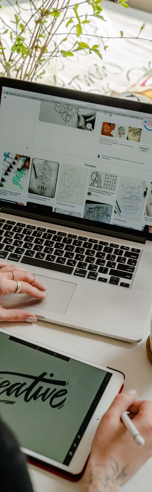

The Why
The world has changed so much over the last three decades. We've made incredible leaps that those before us didn't even think were possible. And yet here we are. Now, with the power of the World-Wide-Web, we have access to almost all the information and tools we could ever ask for. Inversely, this also means that you now have the power to reach out farther than the door of your home or business - you have the power to reach the world. That's where having a website comes in.
